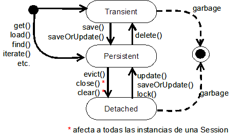

Mapeado de clases persistentes
En esta sesión explicaremos cómo (mapear) crear correspondencias entre clases persistentes y elementos de una base de datos para poder trabajar con Hibernate. También hablaremos de los tipos Hibernate, explicando las diferencias entre los objetos de tipo value y de tipo entity. Los objetos Hibernate (u objetos persistentes) pueden estar en varios estados, explicaremos cómo se puede cambiar de un estado a otro y así comenzaremos a trabajar con los objetos persistentes asociados a objetos Java.
Clases persistentes
En una aplicación, la capa de persistencia está formada por un conjunto de clases y componentes responsables del almacenamiento y recuperación de datos, a y desde una o más fuentes de datos. Esta capa, necesariamente incluye un modelo de las entidades del modelo del negocio.
Las clases persistentes, por lo tanto, son clases situadas en la capa de persistencia que implementan las entidades del negocio del problema (por ejemplo Cliente y Pedido en una aplicación de comercio electrónico). Hibernate trabaja mejor si estas clases siguen unas sencillas reglas, también conocidas como el modelo de programación POJO (Plain Old Java Object). Ninguna de estas reglas son un requerimiento necesario, de hecho, Hibernate3 asume muy poco o nada acerca de sus objetos persistentes.
Las reglas para crear clases persistentes en forma de POJOs son:
- Declarar métodos para acceder a las variables miembro de la clase
- Implementar un constructor sin argumentos
- Proporcionar una propiedad que sirva como identificador (opcional)
- Utilizar clases no "finales" (opcional)
A continuación mostramos un ejemplo sencillo de un POJO (Customer.java):
package example;
public class Customer {
private Long id;
private CustomerLocation customerLocation;
private String name;
public Customer() {}
public Long getId() {
return id;
}
public void setId(Long id) {
this.id = id;
}
public CustomerLocation getCustomerLocation() {
return customerLocation;
}
public void setCustomerLocation(CustomerLocation customerLocation) {
this.customerLocation = customerLocation;
}
public String getName() {
return name;
}
public void setName(String name) {
this.name = name;
}
}
Ciclo de vida de los objetos persistentes
Como ya vimos en la sesión anterior, la persistencia de objetos significa que los objetos individuales pueden "sobrevivir" fuera del proceso de la aplicación que los creó. Esto significa que pueden ser almacenados en un almacén de datos y ser recuperados más tarde.
Un objeto persistente, por lo tanto, es cualquier instancia con una identidad de base de datos persistente (valor de clave primaria), es decir, representa una fila de una tabla en una base de datos.
Ya que Hibernate es un mecanismo transparente de persistencia (las clases no son "conscientes" de su propia capacidad de persistencia), es posible escribir la lógica de una aplicación sin tener en cuenta si los objetos con los que trabaja mantienen una representación persistente de su estado, o solamente la mantienen de forma temporal en memoria. La aplicación, por lo tanto, no debería tener en cuenta si un objeto es persistente o no cuando invoca a sus métodos.
Sin embargo, en una aplicación con estados persistentes, la aplicación debe interactuar con la capa de persistencia siempre que necesite propagar los estados almacenados en memoria a la base de datos o viceversa. Para hacer ésto, llamamos al gestor de persistencia y a las interfaces query. Una de las interfaces del gestor de persistencia de Hibernate, Session, es la responsable de gestionar el estado de los objetos, por lo que es importante entender cómo utilizar este API.
Cuando interaccionamos con el mecanismo de persistencia es necesario que la aplicación tenga en cuenta el estado y el ciclo de vida de un objeto con respecto a su persistencia (por ejemplo para saber si los cambios a ese objeto estarán sincronizados con su estado persistente almacenado). Hibernate utiliza tres estados para un objeto: transient, persistent, y detached. La Figura 2.1 muestra los estados y transiciones de un objeto en una aplicación Hibernate.

En la Figura 2.1 se pueden observar las llamadas a métodos del gestor de persistencia que lanzan las transiciones. En este ciclo de vida, un objeto puede sufrir transiciones entre transient, persistent y detached. Veámos con un poco más de detalle cada uno de estos estados:
Objetos transient
En Hibernate, los objetos instanciados con el operador new no son inmediatamente persistentes. Su estado es transient, lo cual significa que todavía no están asociados con ninguna fila de una base de datos, y por lo tanto su estado se pierde en cuanto dejan de estar referenciados en la aplicación. Una instancia transient no está, ni nunca ha estado asociado con ningún contexto persistente (por lo que no tiene identidad persistente). Para pasar a un estado persistent es necesario realizar una llamada a save().
Objetos persistent
Una instancia persistente es cualquier instancia que representa una fila de una tabla de la base de datos (actualmente está asociada con un contexto persistente), y por lo tanto tiene un valor de clave primaria asignado como su identificador de base de datos. Un objeto se convierte en persistente mediante una llamada a save(). Las instancias persistentes están siempre asociadas con una Session y son transaccionales (participan en las transacciones, lo cual significa que su estado se sincroniza con la base de datos al final de la transacción). Una instancia persistente puede convertirse en transient mediante una llamada a delete() sobre el API gestor de persistencia, y como resultado se borra la correspondiente fila de la base de datos.
Objetos detached
Cuando se completa una transacción, las instancias persistentes asociadas con el gestor de persistencias todavía existen (si la transacción ha tenido éxito, el estado en memoria del objeto se ha sincronizado con la base de datos). En el caso de Hibernate, estas instancias pierden su asociación con el gestor de persistencia cuando cerramos la Session (ejecutamos close()). Nos referiremos a estos objetos como detached, indicando que ya no hay garantías de que su estado se sincronice con el de la base de datos. Una instancia detached, por tanto, estuvo en algún momento asociada con un contexto persistente, pero dicho contexto fue cerrado. Hibernate proporciona una operación de detachment explícita: el método evict() de la Session. Aunque no es usual el llamar a esta operación de forma explícita. Una instancia detached puede volver a ser persistente asociándola con una nueva Session.
Modelo de programación de clases persistentes
El diseño e implementación de clases persistentes es un proceso en el que hay que seguir los siguientes pasos:
- Identificación de las entidades de negocio del domino del problema
- Creación de un modelo conceptual de estas entidades y sus atributos, es lo que se conoce como un modelo del dominio. El uso de persistencia de objetos con ORM es más adecuado para aplicaciones basadas en un modelo del dominio "rico". Si una aplicación no implementa reglas de negocio complejas o interacciones complejas entre entidades (o si se tienen pocas entidades), no será necesario un modelo del dominio. Hay muchos problemas que son perfectamente adaptables a soluciones orientadas a tablas, en los que la aplicación se diseña alrededor del modelo de base de datos en lugar del modelo orientado a objetos, a menudo con una lógica que se ejecuta en dicha base de datos (procedimientos almacenados). Sin embargo, cuanto más complejo y expresivo sea el modelo del dominio, más nos beneficiaremos del uso de Hibernate.
- Implementación del modelo del dominio en Java creando una clase persistente para cada entidad (usando POJO's).
- Definición de los metadatos de la correspondencia (Object/Relational Mapping metadata), para indicarle a Hibernate cómo se relacionan las clases y sus propiedades con las tablas y columnas de la base de datos. Estos metadatos de correspondencia se escriben en formato XML (utilizando ficheros con extensión hbm.xml).
En esta sesión utilizaremos los ficheros de correspondencia para definir las clases persistentes. En la siguiente sesión explicaremos cómo incluir las relaciones entre clases persistentes en dichos ficheros de correspondencia.
Mapeado de clases persistentes
Las correspondencias O/R se definen normalmente con un documento XML. La forma básica que presenta dicho documento es:
<?xml version="1.0"?>
<!DOCTYPE hibernate-mapping PUBLIC
"-//Hibernate/Hibernate Mapping DTD 3.0//EN"
"http://hibernate.sourceforge.net/hibernate-mapping-3.0.dtd">
<hibernate-mapping package="nombre">
<class name="Nombre_clase"
table="nombre_tabla">
<id name="nombre_clave_primaria"
column="nombre_tabla"
<generator class="nombre_clase_generadora_ids"/>
</id>
<property name="nombrePropiedad"
column="nombre_columna"
type="tipo_hibernate"
not-null="true|false"
update="true|false"
insert="true|false"/>
<property name=... />
...
</class>
Una correspondencia XML debe declarar en primer lugar el DOCTYPE indicado. A continuación se especifica el elemento hibernate-mapping, que tiene varios atributos opcionales (ver el manual de referencia de hibernate), como por ejemplo schema (define el nombre del esquema de la base de datos), catalog (define el nombre del catálogo de la base de datos), y package (especifica un prefijo de paquete para poder omitirlo en el nombre de las clases en el resto de documento de mapeado).
Para declarar una clase persistente utilizamos el elemento class, en el que algunos de sus atributos son:
- name: nombre de la clase java
- table: nombre de la tabla asociada a la clase
- schema, catalog: sobreescriben el nombre del esquema y catálogo, respectivamente, si ya han sido especificados en el elemento hibernate-mapping
- table es opcional, por defecto toma el valor del nombre asignado al atributo name, es decir, por defecto la tabla en la BD y la clase asociada tienen el mismo nombre.
Se debe declarar cuál es la columna de clave primaria mediante el elemento id. El atributo name es opcional y representa el nombre del identificados en la clase Java. Si se omite el atributo name se asume que la clase no tiene una propiedad que representa el identificador. El atributo column también es opcional y representa el nombre de la columna de clave primaria, por defecto se asume el nombre de la propiedad name.
El elemento hijo generator (opcional) indica cuál es el nombre de la clase Java utilizada para generar identificadores únicos para las instancias de la clase persistente. Todos los generadores implementan la interface org.hibernate.id.IdentifierGenerator. Hibernate proporciona varias implementaciones de dicha interfaz, como por ejemplo native, que genera identificadores de tipo long, short o int, dependiendo de la base de datos subyacente. Otros valores posibles para el atributo class son increment y sequence. Ver en el manual de referencia de Hibernate todos los valores posibles, apartado 5.1.4.
Con respecto a la elección de la clave primaria de una tabla, muchos modelos de datos SQL antiguos utilizan claves primarias naturales. Una clave natural es una clave con un significado para el negocio: un atributo o combinación de atributos que son únicos en virtud de su semántica de negocio. Por ejemplo un número de la seguridad social. Distinguir las claves naturales es sencillo: si un atributo candidato a clave primaria tiene un significado fuera del contexto de la base de datos, entonces es una clave natural, es decir, no generada automáticamente.
La experiencia ha demostrado que las claves naturales casi siempre causan problemas a lo largo del tiempo. Una buena clave primaria debería ser única, constante y debe ser requerida (nunca debe tener un valor nulo o desconocido). Muy pocos atributos de entidades satisfacen estos requerimientos, y algunos que sí lo hacen no son indexables de forma eficiente en bases de datos SQL. Además, se debería asegurar que un candidato a clave nunca cambiará durante el tiempo de vida de la base de datos antes de proponerlo como clave primaria (cambiar la definición de una clave primaria y todas las claves ajenas a las que hace referencia es una tarea frustrante).
Por todas estas razones, recomendamos que las nuevas aplicaciones utilicen identificadores sintéticos, también denominados claves "sucedáneas" (surrogate keys). Las surrogate keys no tienen ningún significado para el negocio: son simplemente valores únicos generados por la base de datos o la aplicación. De ahí la conveniencia de utilizar el elemento generator.
El elemento property declara una propiedad persistente de la clase. Algunos de sus atributos son:
- name: nombre de la propiedad, comenzando por letra minúscula.
- column: nombre de la columna asociada. Este atributo es opcional, por defecto toma el nombre de la propiedad name.
- type: puede ser el nombre de un tipo básico de Hibernate (integer, string, character, date, timestamp, float, binary, serializable, object, blob,...), el nombre de una clase Java con un tipo básico por defecto (int, float, char, java.lang.String, java.util.Date, ...), el nombre de una clase Java serializable, o el nombre de un tipo (clase) creado por nosotros. Si no especificamos un tipo, Hibernate utiliza el proceso de reflection sobre el valor del elemento name para asignar el tipo Hibernate.
- not-null: restricción de valor no nulo.
- unique: restricción de unicidad.
- update, insert: para indicar si las columnas pueden incluirse en sentencias SQL update e insert, respectivamente.
Por ejemplo, para la clase Customer definida anteriormente, el fichero Customer.hbm.xml contendría lo siguiente:
<?xml version="1.0"?>
<!DOCTYPE hibernate-mapping PUBLIC
"-//Hibernate/Hibernate Mapping DTD 3.0//EN"
"http://hibernate.sourceforge.net/hibernate-mapping-3.0.dtd">
<hibernate-mapping>
<class name="example.Customer"
table="CUSTOMER">
<id name="id"
column="CUSTOMER_ID"
<generator class="native"/>
</id>
<property name="customerLocation"
column="C_LOCATION"
type="example.CustomerLocation"
/>
<property name="name"
column="C_NAME"/>
</class>
En este caso, la propiedad name no incluye el atributo type, de forma que Hibernate obtiene el tipo correcto del nombre de la clase Java correspondiente.
Modelos de objetos de "grano fino" (fine-grained models)
Un objetivo principal del proyecto Hibernate es el de soportar modelos de objetos de "grano fino". Hablando informalmente, de "grano fino" significa "más clases que tablas". Por ejemplo, un usuario podría tener una dirección a la que enviar las facturas y una dirección personal. En la base de datos, podríamos tener una única tabla USUARIO con las columnas FACTURA_CALLE, FACTURA_CIUDAD, y FACTURA_CODPOSTAL, junto con PERSONAL_CALLE, PERSONAL_CIUDAD , y PERSONAL_CODPOSTAL. Hay buenas razones para utilizar este modelo relacional algo "desnormalizado", como por ejemplo el rendimiento.
En nuestro modelo de objetos, podríamos utilizar la misma aproximación, representando las dos direcciones como seis propiedades de tipo string de la clase Usuario. Pero para que nuestro modelo de objetos tenga una mejor cohesión y más facilidad de reutilización de código, así como ser más legible, sería mejor definir una clase Direccion, con una semántica de más alto nivel así como un comportamiento, por ejemplo con un método enviarCorreo().
Esto nos lleva a una cuestión importante, y es que en Java, todas las clases tienen el mismo "status": todos los objetos tienen su propia identidad y ciclo de vida, y todas las instancias de clases se pasan por referencia. Solamente los tipos primitivos se pasan por valor. Sin embargo, puesto que estamos apostando por un diseño en el que hay más clases que tablas, una fila puede representar múltiples objetos, de los cuales algunos tendrán su propia identidad (implementada como la clave primaria) y otros dependerán de ésta.
Hibernate hace la siguiente distinción fundamental:
- Un objeto de tipo entity tiene su propia identidad en la base de datos (valor de la clave primaria). Las instancias de tipo entity deben ser guardadas y borradas de forma explícita (excepto si se ha especificado el atributo cascade para dichas operaciones; veremos el uso de este atributo en la siguiente sesión). Cuando hablamos de "clases persistentes" nos estamos refiriendo a objetos entity. Un entity tiene su propio ciclo de vida: puede existir independientemente de otros entitys.
- Un objeto de tipo value no tiene identidad en la base de datos; pertenece a un objeto entity, y depende de él. Un tipo value es un tipo primitivo, una collection (no lo que hay dentro de una collection) o un componente (definiremos este término más adelante, cuando hablemos de la relación de composición). A diferencia de las entidades, los valores son almacenados y borrados por "alcanzabilidad" (desde la instancia entity a la que pertenecen), es decir, los objetos value se convierten en persistentes y son borrados juntamente con la entidad que los contiene. Además, una instancia de tipo valor tiene exactamente una única entidad propietaria cuando es recuperada de la base de datos, y por lo tanto no puede ser compartida
Siguiendo con el ejemplo anterior de las clases Usuario y Direccion, en la base de datos la clase Usuario se podría corresponder con un tipo entity (con su clave primaria en la tabla correspondiente), y la clase Direccion con tipo value (depende del usuario) . Volveremos sobre ésto cuando veamos cómo establecer la correspondencia O/R cuando existe una relación de composición entre las clases de objetos.
Es necesario realizar una correspondencia entre el sistema de tipos Java y el sistema de tipos de base de datos SQL. El puente entre ambos lo proporciona Hibernate. Para las entidades usamos <class>. Para tipos value utilizamos <property>, <component>, etc. normalmente con un atributo type. El valor de este atributo es el nombre de un tipo de mapeado Hibernate (Hibernate mapping type), al que llamaremos un tipo Hibernate para simplificar. Como ya hemos comentado en la sesión anterior, hay un conjunto de tipos Hibernate básicos (que utilizaremos como valor del atributo type: integer, character, calendar,..., y podemos incluso definirnos nuestros propios tipos. Para más información sobre los value types de Hibernate podéis consultar el manual de referencia, en el apartado 5.2.
Colecciones de valores
Vamos a ver cómo añadimos una colección de objetos de tipo value a un objeto entity. Tomemos como ejemplo la clase Usuario anterior, a la que añadiremos una colección de teléfonos (colección de objetos de tipo value):
public class Usuario {
...
private Set telefonos = new HashSet();
public Set getTelefonos() {
return telefonos;
}
public void setTelefonos (Set telefonos) {
this.telefonos = telefonos;
}
}
Las variables de instancia de tipo colección tienen el comportamiento usual de los tipos value. Dichas variables se convierten en persistentes de forma automática cuando son referenciadas por un objeto persistente y se borran automáticamente cuando dejan de estar referenciadas. Si una colección se pasa de un objeto persistente a otro, sus elementos podrían moverse de una tabla a otra (esto lo veremos en la siguiente sesión cuando hablemos de las asociaciones). Dos entidades no pueden compartir una referencia a la misma instancia de colección. Debido al modelo relacional subyacente, las propiedades que son colecciones de valores no soportan semántica de valores nulos; Hibernate no distingue entre una referencia a una colección nula y a una colección vacía.
El mapeado de la propiedad de tipo colección de valores telefonos es:
<set name="telefonos" table="USU_TELEFONOS"
lazy="false">
<key column="USUARIO_ID"/>
<element type="string" column="TELEFONOS"/>
</set>
Utilizamos el elemento (etiqueta) <set> para mapear propiedades de tipo Set. El atributo name representa el nombre de la propiedad colección. El atributo table es opcional y hace referencia al nombre de la tabla que contiene la colección de elementos, por defecto toma el nombre de la propiedad. El atributo table no se utiliza en asociaciones one-to-many, como veremos más adelante.
El atributo lazy es opcional y nos permite decidir si queremos que Hibernate recupere los elementos de la colección al mismo tiempo que recupera los elementos de Usuario o no. Podemos elegir entre los siguientes valores:
- true: es el valor por defecto. La colección es recuperada de la base de datos cuando la aplicación invoque una operación sobre dicha colección.
- false: Hibernate recupera la colección asociada a Usuario en la misma select, utilizando un outer join. (Hablaremos sobre ésto en la última sesión).
- extra: Los elementos individuales de la colección son accedidos desde la base de datos cuando son necesitados. Hibernate no intenta recuperar la colección en su totalidad a menos que sea absolutamente necesario (ésto es útil cuando tenemos colecciones de elementos muy grandes).
Así, por ejemplo, si queremos añadir un nuevo teléfono, utilizando el valor de lazy por defecto (true), podemos utilizar el siguiente código:
private void addTelToUsuario(Long usuId, String telefono) {
Session session = HibernateUtil.getSessionFactory().getCurrentSession();
session.beginTransaction();
Usuario usu = (Usuario) session.load(Usuario.class, usuId);
// El método getTelefonos() lanza un "lazy load" de la colección
usu.getTelefonos().add(telefono);
session.getTransaction().commit();
}
Es decir, no necesitamos generar de forma explícita una consulta (query) para inicializar la colección de valores. Cuando llamamos al método getTelefonos() se lanza una select adicional para inicializar el valor de la propiedad telefonos del Usuario, para que podamos añadirle un elemento. Se puede optimizar este código con la propiedad lazy=false, en cuyo caso, cuando recuperamos la instancia usu, cargamos también los valores de la colección telefonos en la misma select que se utiliza para recuperar usu, incluyendo un outer join en dicha sentencia select. Estas dos posibilidades son dos estratagias que puede utilizar Hibernate para recuperar información de la base de datos y que comentaremos en la última sesión como "Estrategias de fetching".
Continuando con el mapeado, la etiqueta <key> se utiliza cuando el elemento de mapeado padre (en este caso <set>) hace referencia (define un enlace (join))a una nueva tabla (en este caso USU_TELEFONOS), y define la clave ajena en dicha tabla, que hace referencia a la clave primaria en la primera tabla (en este caso USUARIO_ID sería clave ajena en la tabla USU_TELEFONOS, que hace referencia a la clave primaria de la tabla USUARIO), y se especifica con el atributo column.
La etiqueta <element> está indicando que la colección no contiene referencias a otra entidad, sino a una colección de elementos de tipo String (fijaos que se indica en minúscula (string) y representa el tipo de mapeado Hibernate).
Si implementamos la propiedad telefonos utilizando Java 5.0, que incorpora el uso de genéricos, deberemos concretar el tipo de elementos del tipo Set si queremos que el compilador chequee que estamos utilizando dicha colección de forma consistente, para ello el código para el POJO anterior se convertiría en:
public class Usuario {
...
private Set <String> telefonos = new HashSet<String>();
public Set getTelefonos() {
return telefonos;
}
public void setTelefonos (Set telefonos) {
this.telefonos = telefonos;
}
}
Sesiones y transacciones
La interfaz central entre la aplicación e Hibernate es Session: es el punto de partida para todas las operaciones con objetos persistentes que realiza el gestor de persistencia. Como ya hemos comentado en la sesión anterior trabajaremos con instancias de Session, puesto que son objetos cuya creación es "más barata" que la de una SessionFactory (normalmente crearemos una única SessionFactory al principio de la aplicación a partir de una instancia de Configuration).
Una sesión representa una unidad de trabajo, y engloba un conjunto de operaciones con la base de datos. Hibernate permite trabajar con sesiones mediante el API Session.
Una sesión ejecutará de cuando en cuando las sentencias SQL necesarias para sincronizar el estado de las conexiones JDBC con el estado de los objetos almacenados en memoria. A este proceso se le denomina flush. Este proceso tiene lugar, por defecto, en los siguientes momentos:
- antes de ejecutar algunas query
- desde una llamada a org.hibernate.Transaction.commit()
- desde una llamada a Session.flush()
Las sentencias SQL se ejecutan en un cierto orden (ver el manual de referencia apartado 10.10). No hay niguna garantía sobre cuándo la sesión ejecuta las llamadas JDBC, excepto cuando llamamos de forma explícita a flush, aunque Hibernate garantiza que una llamada a Query.list(..) devolverá los datos actualizados correctamente.
Por otro lado, una transacción hace referencia a un conjunto de operaciones con la base de datos que deben realizarse todas o bien no realizarse ninguna. Una transacción es atómica, de forma que las operaciones que la componen forman una unidad indivisible. Hibernate proporciona el API Transaction para trabajar con transacciones.
Las transacciones con la base de datos nunca son opcionales, toda la comunincación con una base de datos ocurre dentro de una transacción, no importa si leemos o escribimos datos. Una transacción se obtiene a partir de una instancia de una sesión. Para simplificar podemos asumir una relación uno-a-uno entre una sesión y una transacción.
Hibernate se puede utilizar tanto en entornos gestionados como no gestionados. Un entorno gestionado normalmente proporciona transacciones manejadas por el contenedor. En un entorno no gestionado, Hibernate es responsable del manejo del pool de conexiones con la base de datos. Es recomendable hacer que la capa de persistencia sea portable entre ambos entornos, por lo que aconsejamos que se proporcionen los límites de la transacción mediante programación, a través del API Transaction.
La gestión de transacciones presenta un aspecto como éste:
//gestión de transacciones
Session sess = factory.openSession();
Transacion tx = null;
try {
tx = sess.beginTransaction();
// hacer algo
...
tx.commit();
}
catch (RuntimeException e) {
if (tx!= null) tx.rollback();
throw e; // or display error message
}
finally {
sess.close();
}
No es necesario realizar flush sobre la sesión de forma explícita, ya que la llamada a commit() provoca la sincronización con la base de datos. Una llamada a close() marca el final de una sesión. La principal implicación de close() es que la conexión JDBC será abandonada por la sesión y devuelta al pool de conexiones. Este código Java es portable entre entornos gestionados y no gestionados.
Otra solución, más flexible que la anterior, es utilizar la "sesión actual" medidante el método getCurrentSession() a través de la SessionFactory, como en el siguiente ejemplo:
//gestión de transacciones mediante la "sesión actual"
try {
sessionFactory.getCurrentSession().beginTransaction();
// hacer algo
...
sessionFactory.getCurrentSession().getTransaction().commit();
}
catch(RuntimeException e) {
sessionFactory.getCurrentSession().getTransaction().rollback();
throw e; // or display error message
}
¿Qué hace la llamada sessionFactory.getCurrentSession()? En primer lugar, ésta puede realizarse tantas veces como se quiera y donde se quiera, siempre y cuando tengamos almacenada en alguna variable nuestra instancia de SessionFactory. El método getCurrentSession() devuelve siempre la unidad de trabajo actual. Para poder utilizar este método, deberemos especificar la configuración de la propiedad current_session_context_class como thread, en el fichero hibernate.cfg.xml, de la siguiente forma:
<property name="current_session_context_class">thread</property>
Una sesión comienza cuando se la llama mediante getCurrentSession(). En ese momento Hibernate la enlaza con el hilo de ejecución (thread) actual. Cuando la transacción finaliza, realizando una operación commit o rollback, entonces Hibernate desvincula la sesión del hilo de ejecución y la cierra (por lo que no es necesario realizar una llamda explícita a close() para la sesión). Si volvemos a realizar una llamada a getCurrentSession(), obtendremos una nueva sesión y podremos comenzar una nueva unidad de trabajo.
Notar que para el primer caso debemos seleccionar org.hibernate.transaction.JDBCTransactionFactory, como valor de la propiedad org.hibernate.transaction.factory_class (cosa que no es necesaria, ya que es la opción por defecto). En el segundo caso (cuando utilizamos getCurrentSession() tenemos que utilizar la variable hibernate.current_session_context_class con el valor thread.
Operaciones con objetos persistentes
Hibernate es una ORM que no solamente aisla al desarrollador de los detalles de implementación de la base de datos subyacente, sino que permite una gestión del estado de los objetos. Esto constituye una vista orientada a objetos de la persistencia en las aplicaciones Java.
En otras palabras, los desarrolladores de aplicaciones con Hibernate deberían pensar siempre en el estado de sus objetos, y no necesariamente en la ejecución de sentencias SQL. A continuación veremos algunas de las operaciones que podemos realizar con objetos persistentes dentro de una sesión de Hibernate.
CÓMO HACER QUE UN OBJETO SEA PERSISTENTE
Lo primero que querremos hacer con una Session es hacer que un nuevo objeto transient se convierta en persistente, utilizando el método save():
Usuario user = new Usuario(); //user aquí es transient (no persistente)
user.getNombre().setNombre("Juan");
user.getNombre().setApellidos("Penalva");
Session session= sessions.openSession(); //sessions es de tipo SessionFactory
Transaction tx = session.beginTransaction();
session.save(user);
tx.commit(); //sincronización con la BD
session.close(); //liberamos la conexión con la BD
Una llamada a save() hace que la instancia transient de Usuario se convierta en persistente. En ese momento, se asocia con la Session actual. Sin embargo, todavía no se ha ejecutado ninguna sentencia INSERT de SQL. Una Session Hibernate nunca ejecuta ninguna sentencia SQL hasta que sea absolutamente necesario.
También podemos utilizar persist() en vez de save. O también una versión sobrecargada de save que permite asignar un identificador. Por ejemplo: session.save(user, new Long(3));
Los cambios realizados sobre los objetos persistentes se sincronizan cuando hacemos commit() sobre la transacción Hibernate. En este caso, Hibernate obtiene una conexión JDBC y lanza una única sentencia SQL INSERT. Finalmente, se cierra la Session y se libera la conexión JDBC.
Hay que remarcar que es mejor (aunque no es indispensable) inicializar completamente la instancia de Usuario antes de asociarla con una Session. La sentencia SQL INSERT contiene los valores almacenados en el objeto en el momento en el que se llama a save(). Por supuesto, podemos modificar el objeto después de llamar a save(), y los cambios se propagarán a la base de datos como una sentencia SQL UPDATE.
CÓMO ACTUALIZAR EL ESTADO PERSISTENTE DE UNA INSTANCIA DETACHED
Si modificamos la instancia user anterior después de cerrar la sesión, las modificaciones no tendrán efecto sobre su representación persistente en la base de datos. Cuando se cierra la sesión, user se convierte en una instancia detached, que puede volver a asociarse con una nueva Session, llamando a update(), o lock().
El método update() fuerza una actualización del estado persistente de objeto en la base de datos, lanzando una SQL UPDATE:
user.setClave("secret");
Session sessionDos = sessions.openSession();
Transaction tx = sessionDos.beginTransaction();
sessionDos.update(user);
user.setLogin("Juanito");
tx.commit();
sessionDos.close();
No importa si el objeto se modifica antes o después de que sea pasado como parámetro de update(). Lo importante es que la llamada a update() se utiliza para reasociar la instancia detached a la nueva Session (y transacción actual) y le indica a Hibernate el cambio en el estado del objeto (el objeto se trata como dirty, concepto que explicaremos un poco más adelante), para sincronizar el estado actualizado con la base de datos.
Una llamada a lock() asocia el objeto con la Session sin forzar una actualización:
Session sessionDos = sessions.openSession();
Transaction tx = sessionDos.beginTransaction();
sessionDos.lock(user, LockMode.NONE);
user.setClave("secret");
user.setLogin("Juanito");
tx.commit();
sessionDos.close();
En este caso, sí importa si los cambios se realizan antes o después de que el objeto haya sido asociado con la sesión. Los cambios hechos antes de la llamada a lock() no se propagan a la base de datos; solamente debemos utilizar lock() si estamos seguros de que la instancia detached no ha sido modificada. Especificando LockMode.NONE, estamos indicando a Hibernate que no realice una comprobación de la versión, ni obtenga ningún nivel de bloqueo cuando reasocie el objeto con la Session (se podría haber utilizado LockMode.READ o LockMode.UPGRADE, para realizar una comprobación de versiones y obtener un bloqueo de lectura o actualización, respectivamente).
CÓMO RECUPERAR UN OBJETO PERSISTENTE
La Session también se utiliza para hacer consultas a la base de datos y recuperar objetos persistentes existentes:
Session session = sessions.openSession(); Transaction tx = session.beginTransaction(); int userID = 1234; Usuario user = (Usuario) session.get(Usuario.class, new Long(userID); tx.commit(); session.close();
El objeto recuperado user puede pasarse ahora a la capa de presentación para usarse fuera de la transacción como una instancia detached (después de que la sesión se haya cerrado). Si no se encuentra ningúna fila en la tabla con el identificador proporcionado, el método get() devuelve null.
También se podría utilizar el método load() (de hecho es anterior a get(), que fué añadido al API de Hibernate con posterioridad). Las diferencias son:
- Si load() no puede encontrar el objeto en la caché o en la base de datos, se lanza una excepción. El método load() nunca devuelve null. El método get() devuelve null si el objeto no puede encontrarse.
- El método load() puede devolver un proxy en vez de la instancia persistente real. Por otro lado get() nunca devuelve un proxy. Un proxy es un "sustituto" de un objeto cuando se accede a él por vez primera.
Elegir entre get() y load() es fácil: si estamos seguros de que el objeto persistente existe, y su no existencia puede considerarse excepcional, entonces load() es una buena opción. Si no estamos seguros de que haya una instancia persistente con el identificador dado, la mejor opción es utilizar get() y comprobar el que el valor devuelto no es null. El uso de load() tiene otra implicación más: la aplicación puede recuperar una referencia válida (proxy) a una instancia persistente sin acceder a la base de datos para recuperar su estado persistente. De forma que load() podría no lanzar una excepción al no encontrar el objeto persistente en la caché o en la base de datos; la excepción se lanzaría más tarde, cuando se accediera al proxy.
Esto plantea una cuestión importante y es: ¿cuántos elementos debería cargar (en memoria) Hibernate desde la base de datos y cuántas sentencias SQL debe utilizar para ello?. Esto dependerá de la estrategia de fetching utilizada. Hablaremos sobre las estrategias de fetching en la última sesión.
CÓMO ACTUALIZAR UN OBJETO PERSISTENTE
Cualquier objeto persistente devuelto por get(), o cualquier otro tipo de consulta, puede ser modificado, y su estado se sincronizará con la base de datos gracias a un mecanismo denominado automatic dirty checking. Consiste en Hibernate sigue la pista y se anota los cambios realizados sobre un objeto persistente mientras siga estando en dicho estado, es decir, mientras siga dentro de una sesión, de forma que no tenemos que indicar de forma explícita a Hibernate que actualice la base de datos cuando modificamos el estado de un objeto dentro de dicha unidad de trabajo.
Session session = sessions.openSession();
Transaction tx = session.beginTransaction();
int userID = 1234;
Usuario user = (Usuario) session.get(Usuario.class, new Long(userID);
user.setClave("secret");
tx.commit();
session.close();
Primero recuperamos el objeto de la base de datos con el identificador dado. Modificamos el objeto, y estas modificaciones se propagan a la base de datos cuando se llama a tx.commit(). Por supuesto, tan pronto como cerremos la Session, la instancia se considerará detached.
CÓMO HACER QUE UN OBJETO PASE DE PERSISTENT A TRANSIENT
También podemos hacer que un objeto persistente se convierta en transient, eliminando su estado persistente de la base de datos, utilizando el método delete():
Session session = sessions.openSession(); Transaction tx = session.beginTransaction(); int userID = 1234; Usuario user = (Usuario) session.get(Usuario.class, new Long(userID); session.delete(user); tx.commit(); session.close();
La sentencia SQL DELETE se ejecutará solamente cuando la Session se sincronice con la base de datos al final de la transacción. Después de cerrar la Session, el objeto user se considera como una instancia transient ordinaria. La instancia transient será destruida por el recolector de basuras si ya no está referenciada por ningún otro objeto. En ese momento se borrarán la instancia en memoria del objeto, y la fila de la base de datos.
CÓMO HACER QUE UN OBJETO PASE DE DETACHED A TRANSIENT
Finalmente, podemos hacer que una instancia detached, se convierta en transient, borrando su estado persistente de la base de datos:
Session session = sessions.openSession(); Transaction tx = session.beginTransaction(); session.delete(user); tx.commit(); session.close();
En este caso, la llamada a delete() hace dos cosas: asocia el objeto con la Session y a continuación incluye dicho objeto para ser borrado cuando realicemos la operación tx.commit().
Otra operación que podemos realizar con los objetos persistentes es la de distintos tipos de consultas (queries), y que trataremos en la sesión 4.